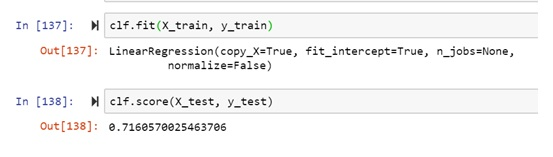
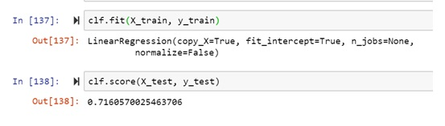

Although there are different options you can turn on for housing mortgage, there are always relatively minimum standards you must meet to qualify; consequently,it’s a good ideas prior your house searching,to find out how much you potentially qualify to borrow. That means you’re not wasting time looking at homes outside your price range or loan type which wouldn't help you.
ML is generally used by lenders to try to estimate the probability of granting a loan given the value of borrowers input variables.
- Personal information: Age, Marital status, income, geographical location
- Credit information: Total amount
- Credit history
- Bank account behavioral
Objective
The objective of this study was to apply ML concepts on USDA data (2019) in different States to try to quantify the level of impact of borrowers behaviour on loan application.
Data source
The USDA guaranteed loan
Data Description
The Borrowers loan dataset is based on congressional District in each State and specify all active loans in each District, number of people in different defined categories based on level of income, race, marital Status, age as well as credit information like average gross income of borrowers in each of the districts, average request amount and average loan amount
Data Preprocessing
This part involves data cleaning and preparation to check for missing data, group the predictors or independant variable(The study used borrower gross income and Requested amount) on State level, data conversion,...
Data Analysis
Machine learning is used to increase understanding by showing which factors most affected specific outcomes

In this predicting modeling, the data had to be partitioned into train and test sets;70% of the data is partitioned for training purpose and 30% for testing purpose. classification techniques(supervised learning)was used to analyse the dataset to bring out any relationship between predictors(explanatories)that are independent variables, in this case Gross income and requested amount and a response (outcome)that is a dependant variable; in this case, Given loan amount.
Results
Correlation matrix helps to understand correlated variables and classification methods: plotting Input variables against the outcome variable revealed a linear regression in some kind of proportionality.
With running in the test and fit in the model, the Clf score was 1 for gross income predictor and 0,7 with customers requested loan amount .

 
